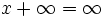
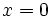

De: La Frikipedia, la enciclopedia extremadamente seria.
De: La Frikipedia, la enciclopedia extremadamente seria. De: La Frikipedia, la enciclopedia extremadamente seria.
| De la serie rarezas del mundo: | |||
| Infinito | |||
| |||
| Cosa que representa | Infinita | ||
| Sirve para | Para no llegar | ||
| ¿Existe? | No se ha llegado | ||
| Trastorno del cerebro | Infinito | ||
| ¿Es comprensible? | No | ||
| Hábitat | Lejos, muy lejos | ||
| Poder | Infinito | ||
| Tipo de rareza | Sin final | ||
| ¿Natural o artificial? | Natural | ||
| Nivel de frikismo | Mucho | ||
| ¿Es abundante? | Infintitesimal | ||
1. El infinito es aquello, que no tiene fin, o sease, algo. En matemáticas se representa como:  . Se dice que es porque representa la famosa cinta de Moebius, quienquiera que sea ese tío, ya que esta cinta no tenía fin. 2. Sinónimo de gordo, contrario a finito (in-finito).
. Se dice que es porque representa la famosa cinta de Moebius, quienquiera que sea ese tío, ya que esta cinta no tenía fin. 2. Sinónimo de gordo, contrario a finito (in-finito).
Existieron numerosas discusiones acerca de si el infinito era un número o no lo era. Hasta que en el siglo XIX dC el gran matemático alemán Cantor se dio cuenta de que sí era un número, concretamente un 8 tumbado. Para demostrarlo escribió un artículo donde representó los números del 1 al 8 pero todos tumbados. El famoso artículo, titulado "Demostrazionen von kommen infiniten sein acht tumbaden" y escrito en 1889, causó una crisis en la ciencia matemática. Sin embargo, Kronenberg, el científico con nombre de cerveza sin alcohol, esgrimió que tal demostración era inválida, pues sólo demostraba que se podía alcanzar y no . A esto Cantor respondió con otro artículo donde representó, esta vez con ayuda de una calculadora, los números del -8 al 8, todos tumbados.
Durante un breve plazo de tiempo (unos 8 minutos verticales), el mundo científico creyó haber descubierto el infinito. Sin embargo, el entonces jovencísimo matemático Gauss, postuló que para llegar a las cifras tumbadas, las cifras verticales debían cansarse antes, dado que el cansancio acumulado de los números era condición necesaria y suficiente para que se tumbaran. Por tanto, para llegar a los número tumbados, los números verticales debían alcanzar el último número corriendo, saltando o haciendo marcha, lo que prefiriesen.
Cantor acabó internado en un manicomio intentando contar hasta infinito para demostrar que era un número, por desgracia parece que se quedó en el 534.323.741.009.434.217.549.345. El problema de la imposibilidad de operar números tumbados con números verticales se convirtió en la definitiva destrucción de su teoría, ya que
Como
,
solo  es solución de la ecuación, consecuentemente solo el 0 vertical se puede sumar al 8 tumbado.
Hoy en día, no suele considerarse un número sino una putada, ya que Einstein demostró, inspirado tras caerle una sandía en la cabeza tras ser iluminado por diox, que lo único infinito que hay en el mundo es la estupidez humana.
Según Stephen Hawking, el infinito equivale al tiempo en milésimas de segundo que tarda una mosca en erosionar una esfera de acero del tamaño de la Tierra, teniendo en cuenta que la toca con una de sus patas sólo una vez cada mil años.
A pesar de lo anterior (y del fracaso de Cantor en su intento de contar hasta infinito), está en alza nuevamente el debate de si es número o no.
Por el momento, lo único que puedes hacer es seguir el ejemplo de Cantor y empezar a contar desde ya.
Autor(es):